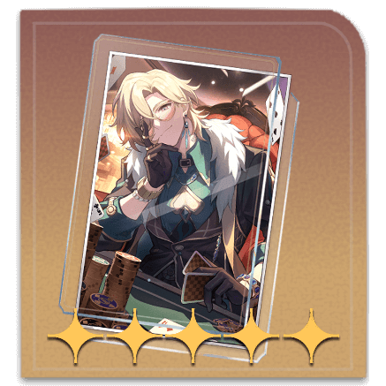

Aventurine, es un personaje de Honkai: Star Rail asociado a la Víade la Preservación y con el elemento Imaginario. Es un personaje defensivo que destaca por proporcionar escudos apilables llamados "Fortified Wager" a sus aliados, aumentando también su resistencia a efectos negativos (Effect RES).
Entre sus habilidades principales se incluyen ataques basados en su DEF (Defensa), y puede realizar ataques adicionales acumulando puntos de "Blind Bet" cuando golpean a aliados con escudo. Su Ultimate, "Roulette Shark", aplica un estado debilitador y aumenta el daño crítico infligido a los enemigos afectados por los aliados. Además, Aventurine puede resistir controles de multitudes (Crowd Control) mientras tiene escudos activos, y al inicio de las batallas otorga protección a todo el equipo.
Es ideal para equipos que se beneficien de escudos y estrategias defensivas, y puede ser una excelente opción en composiciones centradas en ataques adicionales o con personajes que aprovechen debuffs sobre los enemigos
Aventurie's Gameplay Showcase
| Estadisticas a Priorizar | Mejor cono |
|

Destino Inherentemente Injusto |